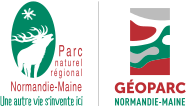

La carte représente l’évolution du bocage au cours des décennies en incluant les années 1945, 2000, 2010 et prochainement 2020.
La carte a été développée par le Parc Naturel Régional Normandie-Maine et s'appuie sur la solution mviewer.
Arbre icônes créées par Freepik - Flaticon. Jardin icônes créées par ultimatearm - Flaticon. Évolution icônes créées par Iconjam - Flaticon. Forêt icônes créées par Freepik - Flaticon